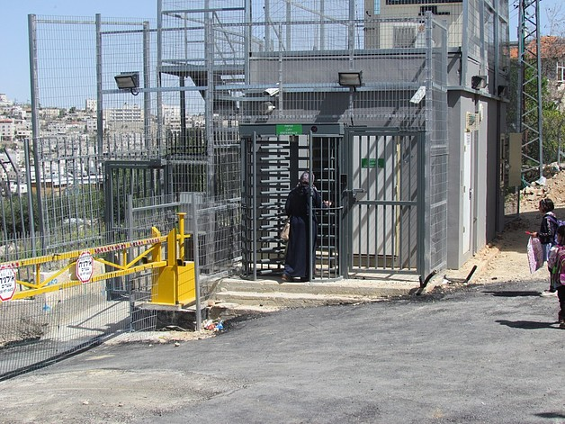

Cinematic Counter‑Cartographies
Exploring formal refusal in Palestinian cinema

About This Project
This research explores how Palestinian women filmmakers such as Mai Masri, Annemarie Jacir, and Farah Nablusi create counter-cartographies through their cinematic treatment of Israeli checkpoints.
I analyze three to five significant checkpoints and how they appear in films released from 2000 to 2025, highlighting how these same spaces are cinematically reimagined and captured over time. Each checkpoint exists as a case study in cinematic resistance.
- How do camera angles refuse the surveillance gaze?
- What do ellipses and offscreen space keep from view?
- How does editing create a counternarrative to security footage?
- What is the politics of what these filmmakers choose not to show?